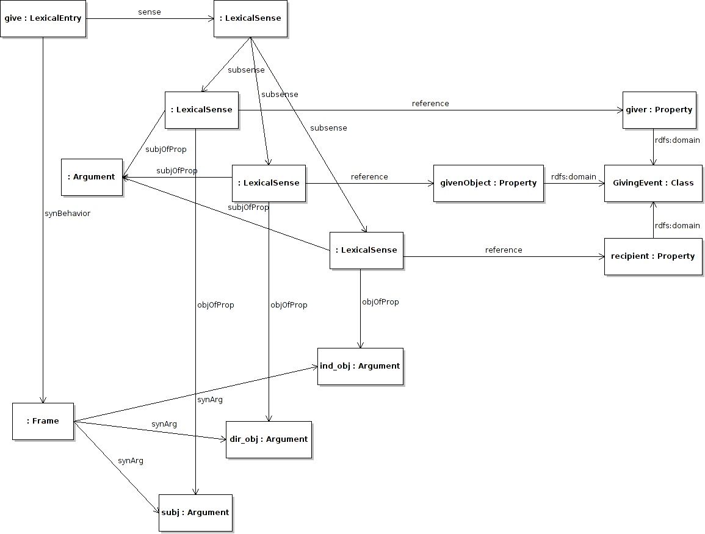

Next: Mapping adjectives Up: Syntax and Mapping Module Previous: Conditions Contents
As OWL only supports unary (class), and binary (property) predicates, it is not possible to simply map more complex syntactic structures to OWL predicates. This requires mapping these complex predicates to structures in the ontology composed over several predicates. For example, consider we had the following simple ontology to describe a giving event, and a lexical entry for "give" in the lexicon as below.
ontology:giver a owl:ObjectProperty ; rdfs:domain ontology:GivingEvent ; rdfs:range ontology:Giver . ontology:givenObject a owl:ObjectProperty ; rdfs:domain ontology:GivingEvent ; rdfs:range ontology:Given . ontology:givenTo a owl:ObjectProperty ; rdfs:domain ontology:GivingEvent ; rdfs:range ontology:Recipient . ontology:Giver a owl:Class . ontology:GivingEvent a owl:Class . ontology:Given a owl:Class . ontology:Recipient a owl:Class .
:give a lemon:Word ;
lemon:synBehavior [ lemon:synArg :give_subj ;
lemon:synArg :give_dir_obj ;
lemon:synArg :give_ind_obj ] .
lemon solves such mapping by creating a compound sense, which is composed of atomic senses which we have described above. As such the lexical entry has a single compound sense, which is composed of atomic senses that map to the ontology reference. The composition of these senses is given by the subsense property. We will now demonstrate how this is used to represent the ``giving'' ontology represented above.
:give
lemon:sense [
lemon:subsense [
lemon:reference ontology:giver ;
lemon:objOfProp :give_subj ;
lemon:subjOfProp :event ] ,
[ lemon:reference ontology:givenObject ;
lemon:objOfProp :give_dir_obj ;
lemon:subjOfProp :event ] ,
[ lemon:reference ontology:givenTo ;
lemon:objOfProp :give_ind_obj ;
lemon:subjOfProp :event ]
].

Here the lexical entry “give” has a single sense composed of three senses, one for each property in the ontology. Each of these sub-senses has an argument mapped to the syntactic frame and one to a new argument element :event, which is not bound to any syntactic frame, but instead indicates that the subject of all properties should be the same individual.
John McCrae 2012-07-31